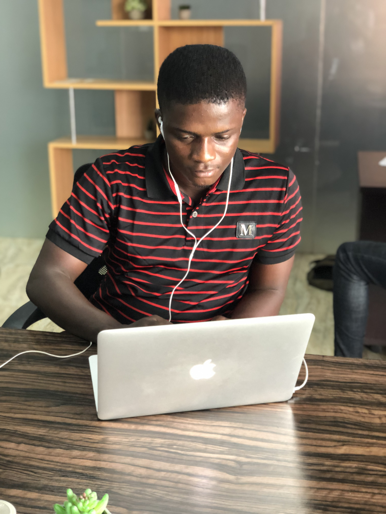

About Me
Read through to know about me...

A bright, talented and ambitious Frontend Developer with a strong self-discipline and good work ethics. Possess a deep love for writing and teaching of JavaScript. Have passion to work with emerging web technologies and building products with production ready awareness and grit. Have a good team spirit, deadline oriented and having the ability to organize. I am involved with building a tech community in Ibadan and have also spoken at a local meet-ups.
Easyshop Admin
Frontend (Vue.Js) Developer
I built the Vendor and Admin Dashboard for Easyshop Admin an ecommerce website, using Vue.Js and Bootstrap.
Project Eat
Web Developer
Project Eat is a non-governmental organization, helping Almajiris in Nigeria get the support and awareness needed to support there skill acquisition and Schooling.
JJD
Front-end Developer
(Side project) A travel agency website, that gives tourists a home feeling experience through services rendered.